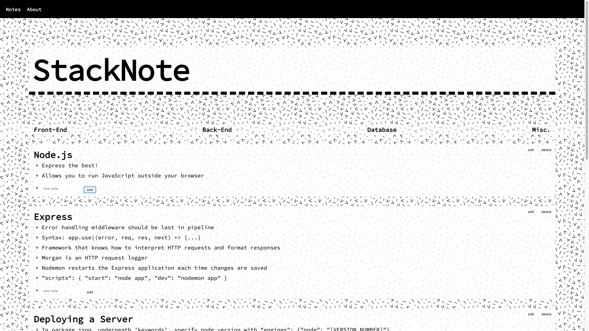
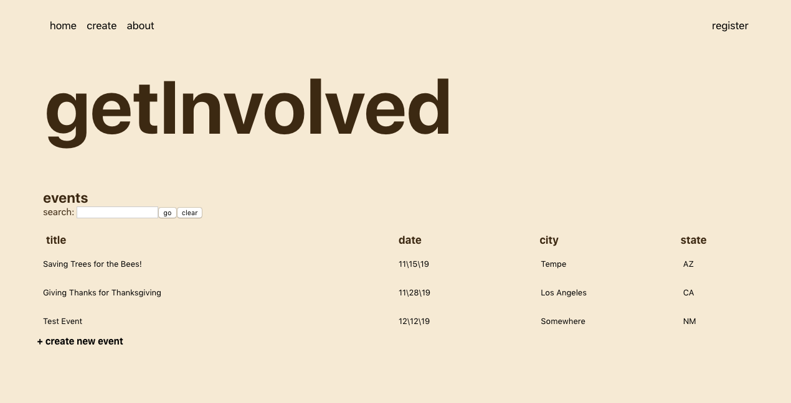

Allow me to introduce myself...
I'm Trevor. I'm a Full Stack Web Developer and graduate of Thinkful's Engineering Flex program. I've been actively working on my education in web development since late 2018. I graduated with honors from Arizona State University's school of philosophy in 2012, and I've been looking for my next big challenge since then. What I loved about my philosophy education was creating clean, effective arguments that serve a purpose, so it makes sense that I'd similarly enjoy the critical-thinking and problem-solving involved with web development.
Beyond any educational and professional endeavors, I'm also a lifelong, self-taught musician that enjoys coming up with clever ways to actualize the sounds I have in my head. My education in music has taught me that there are many different and creative ways to approach whatever challenges you are presented with, and I'm enjoying figuring out how that translates into web development.
Here are some things I've done:
StackNote

StackNote is a standard note-taking app for students beginning to
learn the fundementals of full stack web development. The notes
sections are broken down by by Front-End, Back-End, Database, and
Misc. for any notes that do not fall strictly under one category.
Start taking notes today!
getInvolved

getInvolved is an organization platform for volunteer opportunities in
your community. Our aim is to take the trouble out of trying to find
how you can make a difference, and rather where you can take action
immediately.
explore, post, search, organize, and share volunteer opportunities all
from one central location with getInvolved.
foodgrid.

foodgrid. is a web app for use when you're so hungry that you can't be bothered with clicking around on Yelp or Google Maps. Just type in the location you'd like to search in (city+state, address, or ZIP) and you'll be provided with photos from the highest rated restaurants in the area. Once you've found what looks the best to you, just click to be brought directly to the business' Yelp page. It's that simple.
HTML, CSS, JavaScript, jQuery Live App RepositoryLittle Quiz of Horrors

A simple, 10-question quiz on some of the most iconic horror films in history. The point of this project was to focus on the use of jQuery to render the form element within the DOM to house the questions asked throughout the quiz, as opposed to having all 10 questions rendered out as soon as the page loads.
HTML, CSS, JavaScript, jQuery Live App RepositoryGitHub
Code check? You can find my GitHub here:

Contact:
Wanna chat? You can reach me at:
Email: trevormosterman@gmail.comTelephone: (623)570-0354